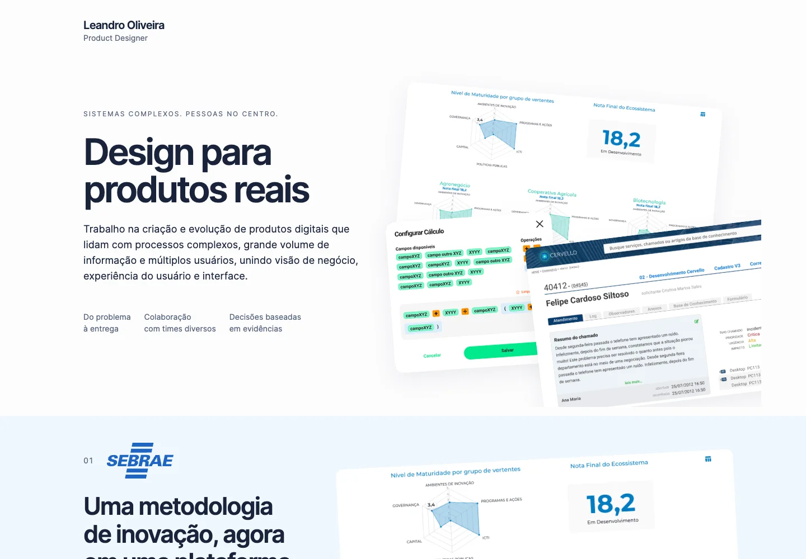

Conhecimento em dados, mais acessível para quem trabalha com eles
Desenhei uma plataforma de qualidade de dados, reunindo diagnóstico, ferramentas de tratamento e pipelines para apoiar o trabalho dos analistas.
Leandro Oliveira / Product Designer

Eu investigo como as pessoas usam software no dia a dia, onde encontram dificuldades e de que informações precisam para decidir. A partir disso, desenho ferramentas que ajudam profissionais a realizar tarefas com mais clareza e autonomia.
Desenhei uma plataforma de qualidade de dados, reunindo diagnóstico, ferramentas de tratamento e pipelines para apoiar o trabalho dos analistas.

a criatividade não elimina a possibilidade de alucinação; ela apenas torna a veracidade um critério que nem sempre é relevante para avaliar o resultado.